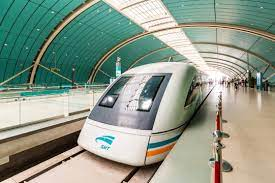
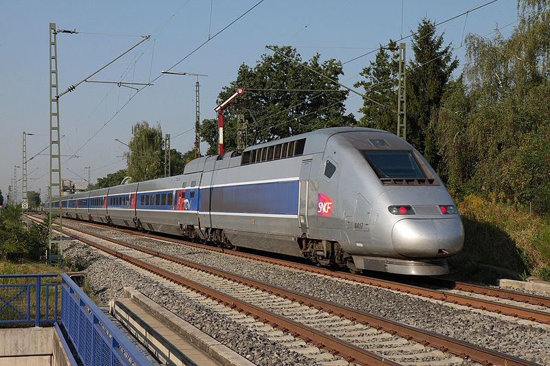

Най-бързите влакове

Shanghai Maglev
Най-бързият влак, достигащ 460 км/ч. Негов е рекордът за 501 км/ч. Той е световен лидер в Китай и този влак минава 30 километров маршрут за седем минути и половина!

CR400 Fuxing и CR400 Harmony
Това са най-редовните бързи влакове, достигащи скорост до 420 км/ч. Дължината е 16 вагона и максимален капацитет от 1200 пътници. Движат се по жп линии Пекин-Шанхай-Хонконг.

TGV POS
Френският TGV POS достига до 357 км/ч и свързва Париж с южната част на Германия и Швейцария. Влакът е един от символите на френската железопътна скорост.

Italo EVO
Italo EVO е най-бързият влак в Италия, развиващ скорост до 360 км/ч. Той е част от високоскоростната мрежа, свързваща най-големите градове в Италия.